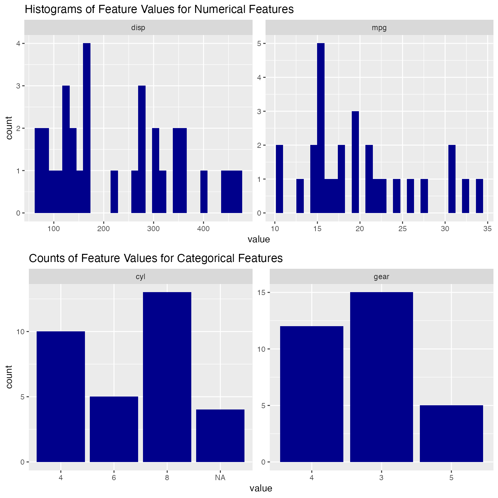
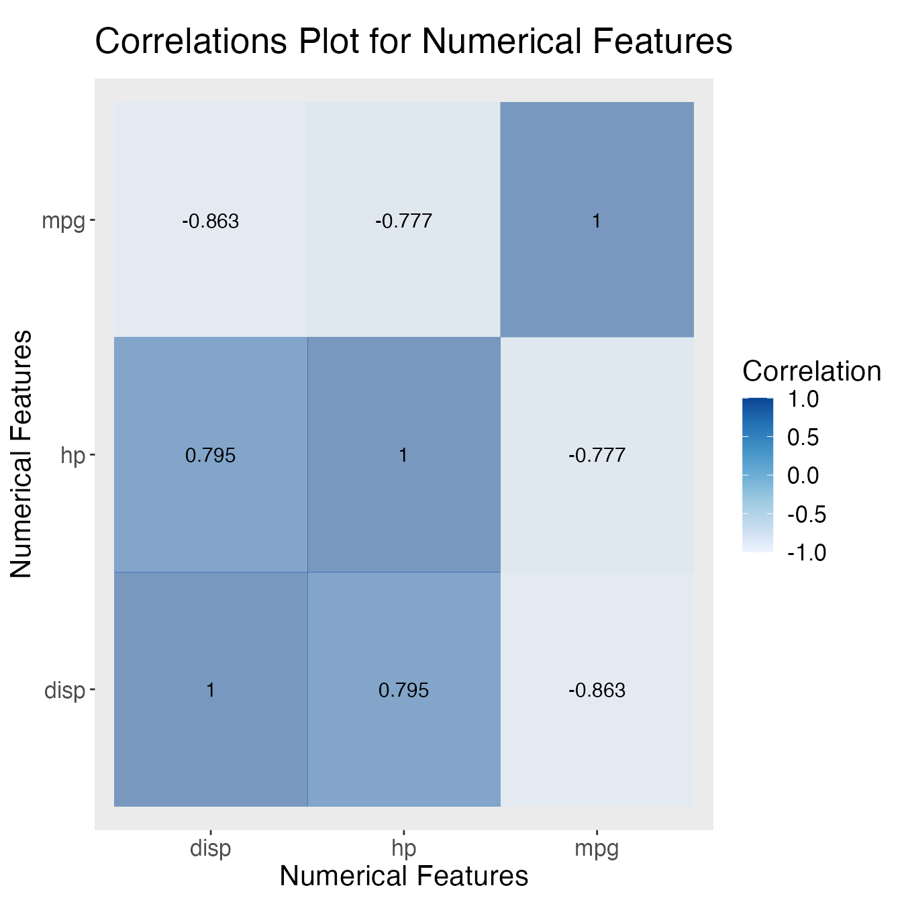

Exploratory data analysis (EDA) and data preprocessing are two crucial steps in the data analysis workflow. To be specific, the users usually need to do the following tasks:
checking missing values - detecting outliers
plotting correlation plots between features
plotting histograms/bar plots for each individual features
imputation
dealing with outliers
The eaziReda that wraps all of those tasks into several convenient functions that allow the users to quickly and easily carry out EDA along with some simple preprocessing:
It can report the number/percentage of missing values for all columns in a given dataframe as well as giving the user an option of imputing the missing values all together based on the imputation methods the user specifies.
It can identify all outliers for a given column/vector based on the methods the user specifies as well as giving the user an option of removing the outliers all together.
It can automatically generate a correlation plot based on user’s choice of features.
It can automatically generate histograms and bar plots based on user’s choice of features.
To illustrate how different functions of the eaziReda package work, we will use the mtcars dataset, which is included in the base R datasets. Also, in order to show the full picture of functions, we choose to modify the mtcars dataset and create a new dataset called mtcars_new by making the data more complicated and unclean. The modifications are shown as below:
mtcars_new$hp[2:5] <- 500After simple modification, the first 10 rows of mtcars_new are shown as follows:
head(mtcars_new, 10)
#> mpg cyl disp hp drat wt qsec vs am gear carb
#> Mazda RX4 21.0 6 160.0 110 3.90 2.620 16.46 0 1 4 4
#> Mazda RX4 Wag NA <NA> 160.0 500 3.90 2.875 17.02 0 1 4 4
#> Datsun 710 NA <NA> 108.0 500 3.85 2.320 18.61 1 1 4 1
#> Hornet 4 Drive NA <NA> 258.0 500 3.08 3.215 19.44 1 0 3 1
#> Hornet Sportabout NA <NA> 360.0 500 3.15 3.440 17.02 0 0 3 2
#> Valiant 18.1 6 225.0 105 2.76 3.460 20.22 1 0 3 1
#> Duster 360 14.3 8 360.0 245 3.21 3.570 15.84 0 0 3 4
#> Merc 240D 24.4 4 146.7 62 3.69 3.190 20.00 1 0 4 2
#> Merc 230 22.8 4 140.8 95 3.92 3.150 22.90 1 0 4 2
#> Merc 280 19.2 6 167.6 123 3.92 3.440 18.30 1 0 4 4missing_detect()
missing_detect() can be used to detect the missing values of a given dataset. There is only one argument for this function, which can be either base-R dataframe or tibble. The output is a table that lists the number of missing values (n_missing) and the percentage of missing values for each column (percent).
For example, we can assess the missing values in the mtcars_new.
missing_detect(mtcars_new)
#> # A tibble: 11 x 3
#> column n_missing percent
#> <chr> <int> <dbl>
#> 1 mpg 4 0.125
#> 2 cyl 4 0.125
#> 3 disp 0 0
#> 4 hp 0 0
#> 5 drat 0 0
#> 6 wt 0 0
#> 7 qsec 0 0
#> 8 vs 0 0
#> 9 am 0 0
#> 10 gear 0 0
#> 11 carb 0 0missing_impute()
missing_detect() can be used to impute the missing values all together for a given dataset. The first argument is the dataset, which can be either base-R dataframe or tibble. The second argument is the method used for imputing numerical missing values (one of “mean”, “median”, “drop”). The third argument is the method used for imputing non-numerical missing values (one of “most_frequent”, “drop”). The output is an imputed version of the input dataset.
For example, we can impute the mtcars_new by filling the NAs by column mean if NA appears in numerical column, and filling the NAs by most frequent values otherwise. The table below shows the first 10 rows of the imputed mtcars_new.
mtcars_new_imputed <- missing_impute(mtcars_new, method_num = "mean", method_non_num = "most_frequent")
head(mtcars_new_imputed, 10)
#> mpg cyl disp hp drat wt qsec vs am gear carb
#> Mazda RX4 21.00000 6 160.0 110 3.90 2.620 16.46 0 1 4 4
#> Mazda RX4 Wag 19.96429 8 160.0 500 3.90 2.875 17.02 0 1 4 4
#> Datsun 710 19.96429 8 108.0 500 3.85 2.320 18.61 1 1 4 1
#> Hornet 4 Drive 19.96429 8 258.0 500 3.08 3.215 19.44 1 0 3 1
#> Hornet Sportabout 19.96429 8 360.0 500 3.15 3.440 17.02 0 0 3 2
#> Valiant 18.10000 6 225.0 105 2.76 3.460 20.22 1 0 3 1
#> Duster 360 14.30000 8 360.0 245 3.21 3.570 15.84 0 0 3 4
#> Merc 240D 24.40000 4 146.7 62 3.69 3.190 20.00 1 0 4 2
#> Merc 230 22.80000 4 140.8 95 3.92 3.150 22.90 1 0 4 2
#> Merc 280 19.20000 6 167.6 123 3.92 3.440 18.30 1 0 4 4outliers_detect()
outlier_detect() can be used to detect the outliers for a given vector/column. The first argument is the vector that the user would like to detect outliers for. The second argument is the method to detect outliers.(one of “zscore”, “iqr”, “iforest”). The output is a boolean vector with indices marked TRUE for the outliers.
For example, we can assess the outliers for the column hp based on the rule of interquartile range (IQR).
outliers_detect(mtcars_new$hp, method = "iqr")
#> [1] FALSE TRUE TRUE TRUE TRUE FALSE FALSE FALSE FALSE FALSE FALSE FALSE
#> [13] FALSE FALSE FALSE FALSE FALSE FALSE FALSE FALSE FALSE FALSE FALSE FALSE
#> [25] FALSE FALSE FALSE FALSE FALSE FALSE FALSE FALSEremove_outliers()
remove_outliers() can be used to remove the outliers for a given vector/column. The first argument is the vector that the user would like to delete the outliers for. The second argument is a boolean vector with outliers marked true. The user can directly pass the results of outliers_detect() as the second argument and remove the corresponding outliers easily. The output is a vector with outliers deleted from the input vector.
For example, we can remove the outliers that we identified before for the column hp.
remove_outliers(mtcars_new$hp, outliers_detect(mtcars_new$hp, method = "iqr"))
#> [1] 110 105 245 62 95 123 123 180 180 180 205 215 230 66 52 65 97 150 150
#> [20] 245 175 66 91 113 264 175 335 109histograms()
histograms can be used to create plots given a list of different kinds of features (columns). The first argument is the dataset, which can be either base-R dataframe or tibble. The second argument is a character vector that contains all the column names that the user would like to plot for. The third argument is an integer that indicates the number of columns in faceted chart produced. The output is a faceted chart that includes one plot each column the user specifies in the second argument. For numerical columns, the corresponding output plots will be the histograms. For categorical columns, the corresponding output plot will be the bar charts.
For example, we can plot and explore the columns: mpg, disp, cyl, and gear together.
histograms(mtcars_new, features=c("mpg", "disp", "cyl", "gear"), num_cols = 2)
#> Warning: Removed 4 rows containing non-finite values (stat_bin).
corr_plot()
corr_plot() can be used to create a pairwise correlation plot given a list of numerical features (columns). The first argument is the dataset, which can be either base-R dataframe or tibble. The second argument is a character vector that contains all the names of the numerical columns that the user would like to plot for. The third argument is the method to calculate the correlation (one of “pearson”, “spearman” or “kendall”). The output is a correlation heatmap showing the correlation between the specified columns.
For example, we can explore the pearson correlation coefficients between the columns: mpg, disp, and hp.
